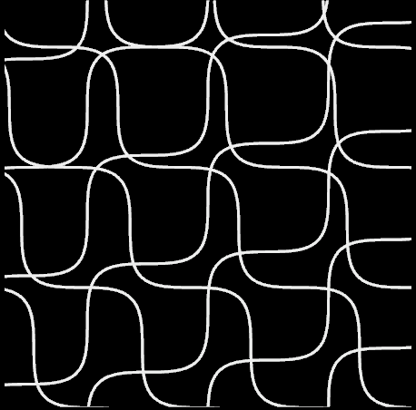

Capstone project
Capstone project (2019-2020): designed (CAD), manufactured (3D printer) and tested (biaxial testing) new protoypes for artificial vascular grafts (hydrogels and elastomers). Explored composites with various fiber and matrix configurations. Above image shows one of the final fiber layout configurations. Based on mechanical and intrinsic properties of small composite patches, determined most suitable prototypes to substitute defective aorta regions.